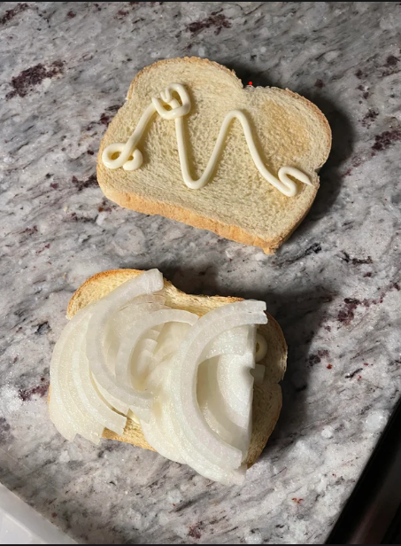

One of signature hood foods
A satisfying meal when you're broke
Ingredients
- The finest of sandwich bread
- The freshest of mayonnaise
- Onion plucked from the garden
Recipe
- Get two slices of bread
- Cut an onion into a fillet and one side of bread
- Put mayo on other piece of bread
- Put together